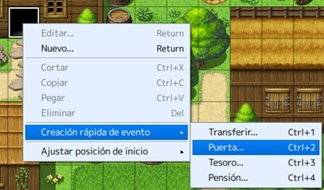
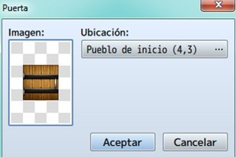

En este tema estudiaremos el concepto de eventos en los videojuegos y los disparadores de los mismos, también su
importancia en nuestros proyectos y los beneficios de su implementación.
Además veremos como utilizar la herramienta evento de RPG Maker y como generar los diferentes eventos de los que
disponemos y acoplarlos a nuestros mapas.
Aprenderemos a como crear desde sencillos eventos rápidos predefinidos, hasta eventos hechos a la medida de nuestras
necesidades con el fin de darle vida a nuestros mundos virtuales.
- Conocer los conceptos de eventos y desencadenantes.
- Conocer la herramienta evento de RPG Maker.
- Conocer los diferentes modos de eventos rápidos que nos proporciona RPG Maker.
- Aprender a crear un evento rápido e implementarlo en nuestro proyecto.
- Conocer la creación de un evento personalizado y su respectiva configuración.
- Aprender a desplegar un evento personalizado con la creación de enemigos y NPCs amistosos.
- Implementar todo lo aprendido a nuestro proyecto principal.
Es una tarea sencilla e intuitiva, aunque llevará tiempo según el nivel de detalle que quieras darle a cada mapa.
Una posible definición de evento es: algo que ocurre en condiciones determinadas.
En definitiva, acciones que van a suceder en el mapa, en batalla o de forma común (estos dos últimos se definen en
la base de datos, en tropas y eventos comunes, respectivamente).
A este respecto, hay tantas posibilidades que voy a centrarme en los eventos rápidos de mapa.
Antes que nada, hay que seleccionar el modo evento:

Tras esto, elegir el tile (casilla) donde quieras colocar el evento y hacer click derecho. Aparecerá el menú secundario; selecciona Creación rápida de evento > Puerta (servirá para colocar una puerta en un edificio, por ejemplo).
Una recomendación: cuando pintes el edificio, acuérdate de poner una abertura para la puerta (el cuadrado negro que se ve en la imagen). Así, la transición del evento se verá más natural; de otro modo, la puerta se abriría y se vería la pared exterior.

En la ventana que aparecerá, se podrá definir el gráfico de la puerta (haz doble click donde la imagen) y la posición a la que irá el PJ (podrás cambiar de mapa, por supuesto). Es un evento rápido muy fácil de asimilar.

Los otros dos eventos rápidos también son sencillos. Paso a explicar sus opciones:
Transferir: Acciona el teletransporte de un mapa a otro, o de una zona a otra (del mismo mapa). Las coordenadas se ajustan en ubicación y el menú dirección ajusta el sprite del personaje (cómo quedaría en pantalla, mirando hacia arriba, abajo, derecha o izquierda).
Tesoro: coloca un cofre en el tile seleccionado, posibilitando que se obtenga oro (dinero), objetos, armas o armaduras. El gráfico del contenedor se puede cambiar en imagen, y en contenido se elegirá lo que guarde.
Nota: este evento se puede editar para que un cofre suelte más de un objeto.